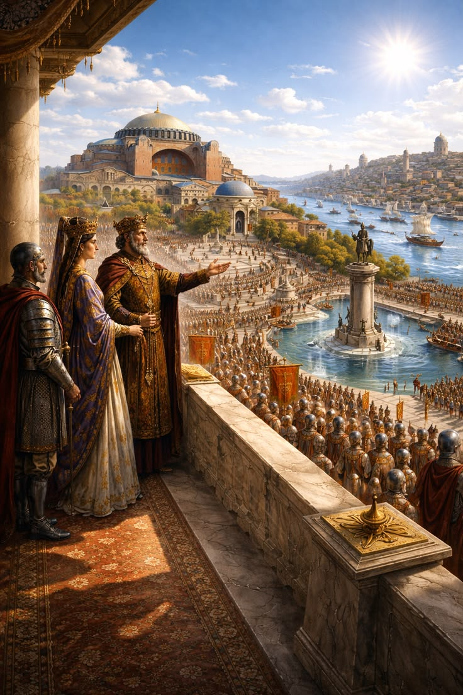

Bizans İmparatorluğu

Konstantinopolis merkezli Doğu Roma, Roma mirasını Orta Çağ boyunca bin yılı aşkın bir süre korumayı başarmıştır.
1453 yılında İstanbul'un fethiyle sona eren bu medeniyet, modern dünyanın şekillenmesinde büyük rol oynamıştır.